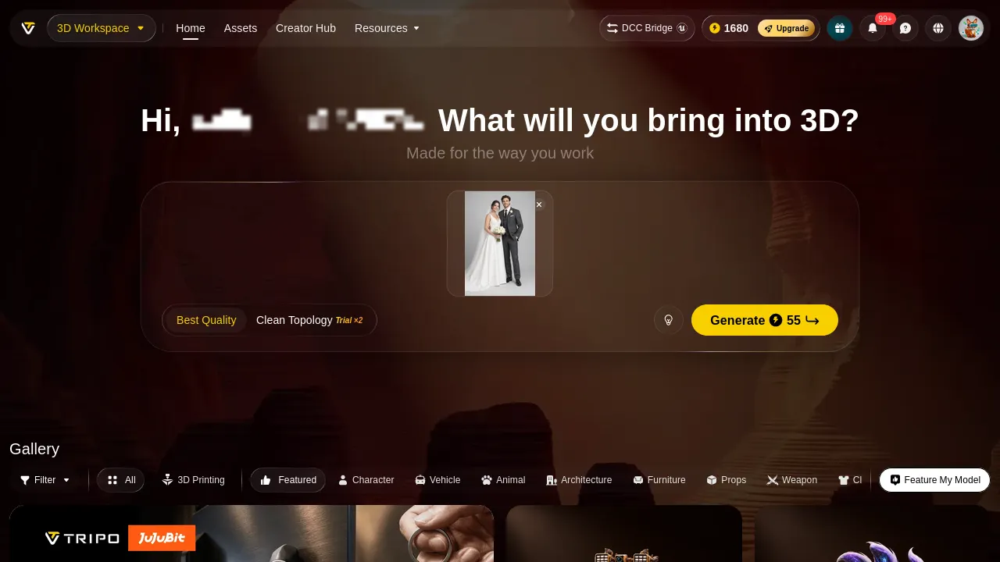
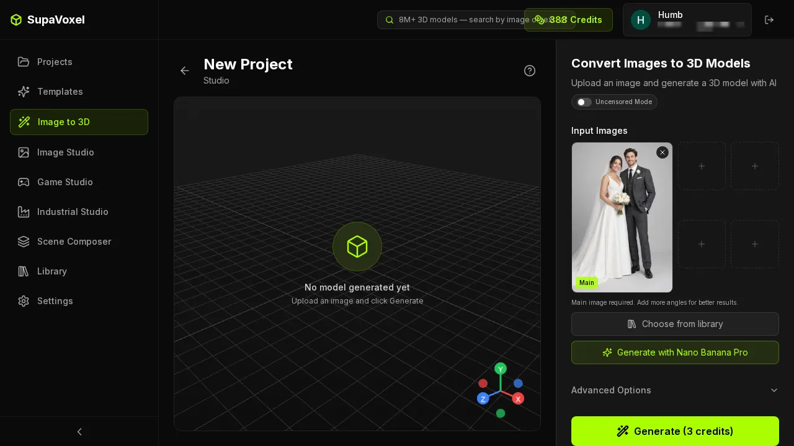
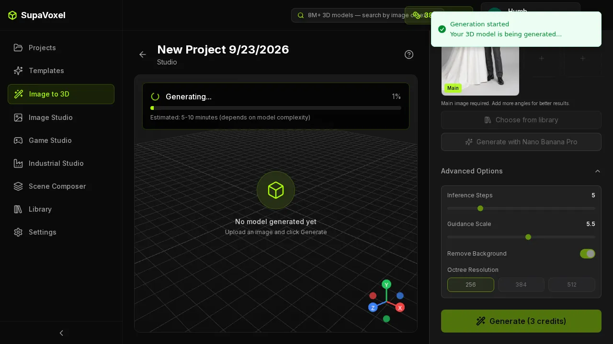
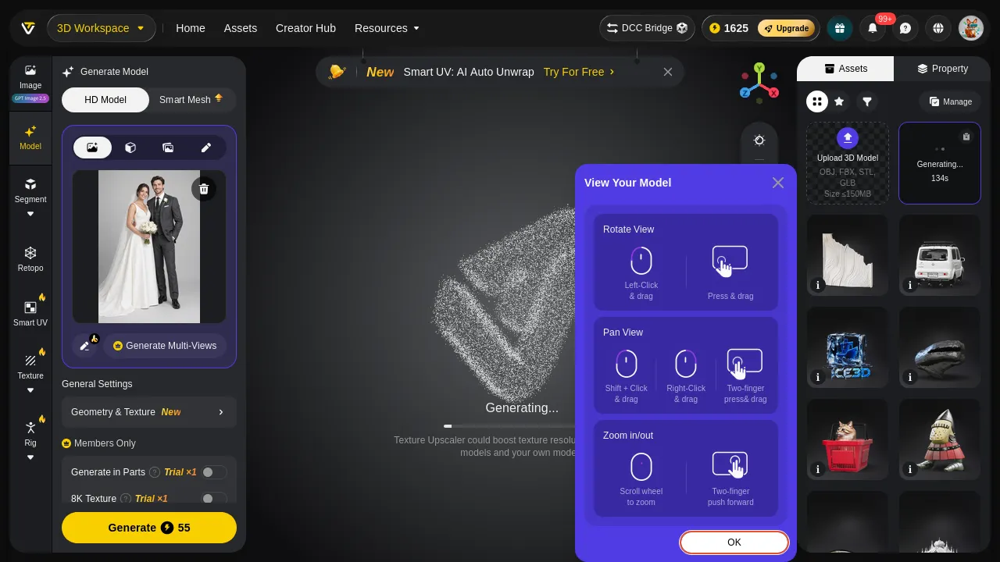
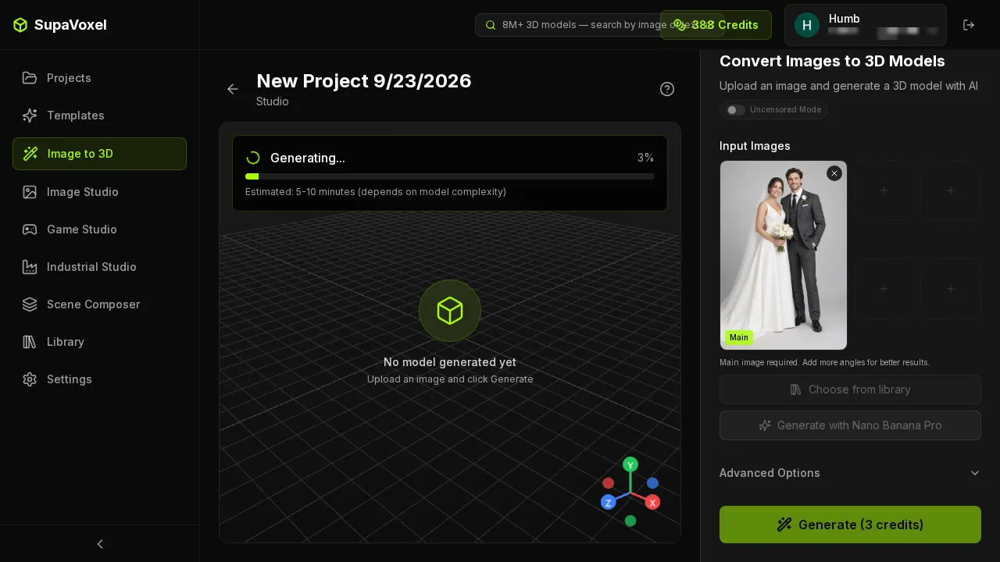
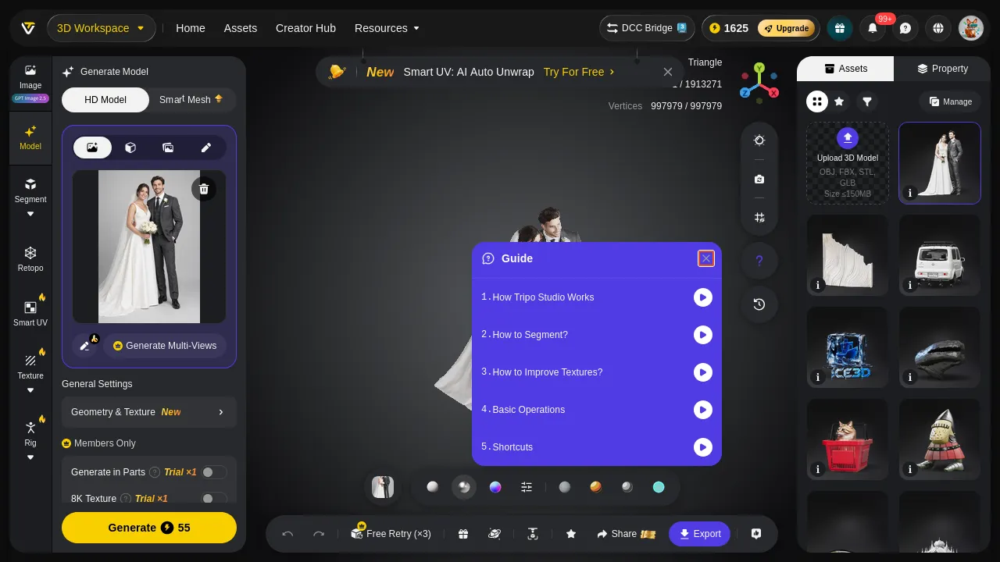
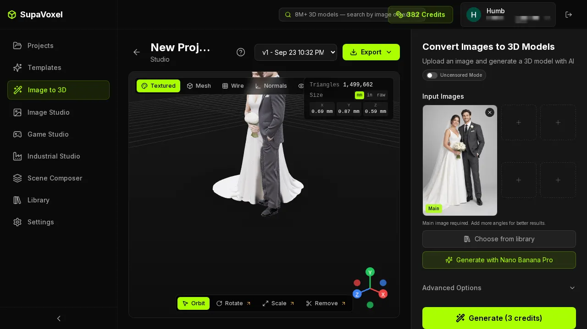
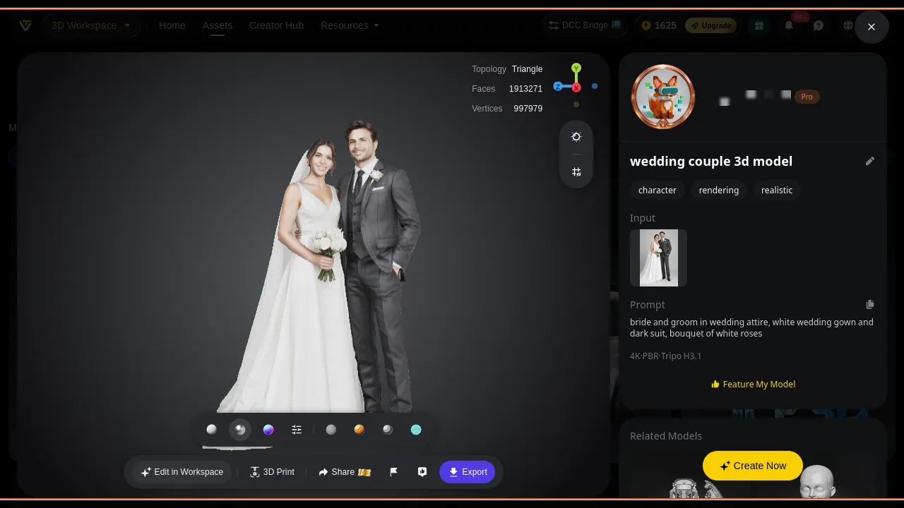
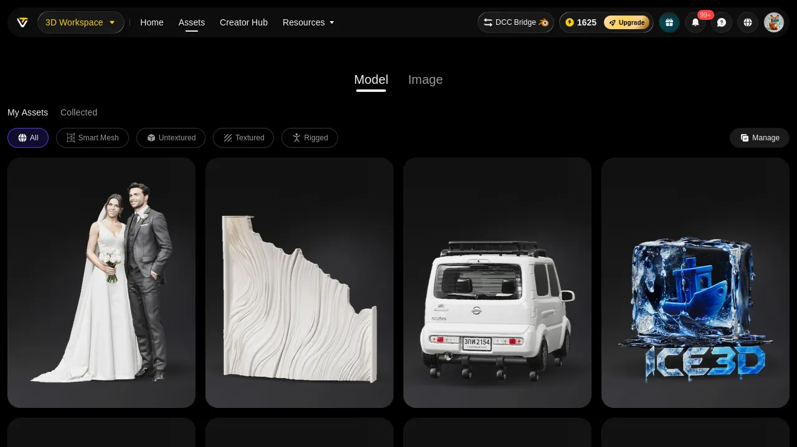
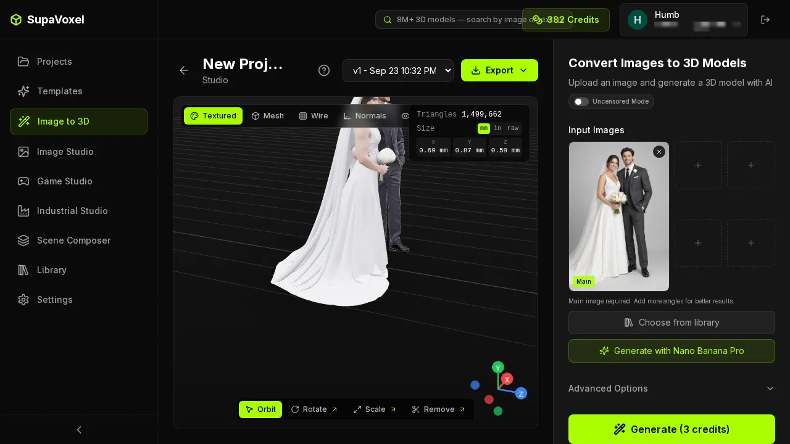

Tripo AI Review 2026: 55 Credits for One Printable Wedding Figurine
My verdict in 60 seconds — Tripo 55/100, SupaVoxel 92/100
Tripo’s pricing page advertises “≈200 Models ($0.16 Per Model)”. The model you actually need — an HD Model, the one that comes with a texture — costs 55 credits. I watched the balance go from 1680 to 1625 on a single wedding-photo generation. At the Pro plan’s $20/month for 3,000 credits, that is $0.367 per model, not $0.16. On SupaVoxel the same job cost 3 credits, which at Starter’s $19 for 400 credits is $0.143 — one eighteenth of the credits and 39% of the money.
The scorecard for this article is the bill, not the mesh.
- Credits per usable model — Tripo 3/10 (55) · SupaVoxel 10/10 (3) — 18.3×
- Cash per model on the main paid tier — Tripo 5/10 ($0.367) · SupaVoxel 9/10 ($0.143)
- Cheapest plan that includes a commercial licence — Tripo 2/10 ($240/yr, Pro) · SupaVoxel 10/10 ($25/yr, Hobbyist) — 9.6×
- Models per paid month — Tripo 4/10 (54) · SupaVoxel 9/10 (133)
- Free tier tries per month — Tripo 3/10 (3) · SupaVoxel 9/10 (30, white mesh + GLB only)
- Trial-limited switches — Tripo 2/10 (three: Clean Topology ×2, Generate in Parts ×1, 8K Texture ×1) · SupaVoxel 10/10 (none)
- Reference images per generation — Tripo 4/10 (1; multi-view is a Pro feature) · SupaVoxel 10/10 (5, same price)
- Honesty of the quoted per-model price — Tripo 2/10 ($0.16 quoted vs $0.367 paid) · SupaVoxel 9/10 (3 credits shown on the button, 3 charged)
Part by part, what is wrong with Tripo’s economics: the advertised per-model price is for a model class you will not ship; the plan that legally allows commercial use starts at $240 a year; a paid month buys 54 figurines when a wedding season needs a hundred; the free tier gives you three attempts to evaluate a product whose whole workflow is “try another photo”; and the switch that would improve the topology is rationed to two uses. For a shop that sells printed keepsakes, use SupaVoxel.
What 55 credits looks like on the button
Tripo’s home generation bar shows the price before you commit: a lightning bolt and 55. Next to it sits Clean Topology, labelled Trial ×2. That pairing is the whole product in one screenshot — the expensive button is always available, the switch that improves what the expensive button produces is metered.


Five reference photos at the same price is not a luxury feature for this job. A wedding couple has a hundred photos and no single one shows the back of the dress. Tripo charges 55 credits to guess the back from one frame; SupaVoxel lets you hand it four more angles for the same 3.
The switches you paid for, and the switches you rented
SupaVoxel’s Advanced Options are all live on a paid plan: Inference Steps, Guidance Scale, Remove Background, and Octree Resolution at 256 / 384 / 512. Nothing is greyed, nothing counts down, there is no Members Only strip.

Tripo has three metered switches: Clean Topology ×2, Generate in Parts ×1, 8K Texture ×1. Two of those three address the exact complaints this test surfaced — topology quality and part separation. You get to test each one once or twice, after which the feature that fixed your problem becomes a reason to upgrade.
Watching the balance move
The generation card is where Tripo’s bill becomes concrete: 1680 before, 1625 after, 55 gone, and a stopwatch reading 134s. It is also where the product decides to sell you something — a promotional banner and a guide overlay sit on top of the viewport while you wait, and when the model is done there is another Guide layer to dismiss.


There is a measurement problem hiding in that pair. SupaVoxel’s 246.4 seconds is exact — it is updatedAt − createdAt from the record, and it beats the 5–10 minutes the product promised. Tripo's time is a range, 134 to 470 seconds, because the stopwatch lives on the generating card and the finished asset carries no completion timestamp at all. If you want to know how long a customer's order took on Tripo, you hold a phone next to the screen.


The library, and what is fenced off inside it
Tripo’s asset pages are competent — versions, a material preview, an export entry — and they are also where the Members Only sections live, next to the trial counters.



Use case A: one couple, one 120 mm cake topper
- Generation cost — Tripo $0.367 · SupaVoxel $0.143
- Wait — Tripo 134–470 s (no completion time given) · SupaVoxel 246.4 s (exact)
- Steps to export STL — Tripo 4, with a “No Texture and Skeleton” note · SupaVoxel 2, plus Fix Mesh / 3D Printing
- Work before the slicer — Tripo patch 1 hole, unify winding · SupaVoxel none
- Resin at $35/L — Tripo $4.57 · SupaVoxel $4.31
For a single piece the resin costs an order of magnitude more than the generation, so neither price matters. What matters is the two manual jobs: one side goes straight into the slicer, the other goes into Blender first and Photoshop after.
Use case B: a wedding shop, 100 figurines in a season
- Credits needed — Tripo 5,500 · SupaVoxel 300
- As subscription time — Tripo 1.83 months of Pro = $36.67 · SupaVoxel 0.75 months of Starter = $14.25
- Does one paid month cover it — Tripo no (54/month; you wait or buy Max at $90) · SupaVoxel yes (133/month)
- Commercial licence floor — Tripo $240/yr (Pro) · SupaVoxel $25/yr (Hobbyist)
- Download volume — Tripo 1.73 GB · SupaVoxel 0.98 GB
- Hole patches and normal flips — Tripo ×100 · SupaVoxel ×0
A $0.22 unit-price gap sounds like nothing and becomes $22.42 across the batch. The two numbers that actually block the business are elsewhere: a Pro month runs out at 54 pieces, and the right to sell what you printed costs $240 a year on Tripo against $25 on SupaVoxel — 9.6× before a single model is generated.
Use case C: the misclick, which was not hypothetical
This one is not a scenario. While automating this test I triggered nine generations on SupaVoxel and burned 27 credits; only one of them was the wedding photo in this article. The rest were a script re-running Generate, a debugging pass on the upload path, and three runs where simply opening the project page with the script added a record (cause not investigated — investigating it costs another 3 credits).
- Cost of one misclick — Tripo 55 credits = $0.367 · SupaVoxel 3 credits = $0.143
- Free-tier attempts per month — Tripo 3 · SupaVoxel 30 (white mesh, GLB export only)
- Those same 9 runs on the other side — Tripo 495 credits = 17% of a Pro month · SupaVoxel 27 credits = 6.8% of a Starter month
- Time per retry — Tripo 134–470 s · SupaVoxel 246.4 s
Photo-to-3D is a craft you iterate: different photo, different crop, different pose. Tripo’s free tier gives you three iterations a month, which is not enough to find out whether the product suits your photos, let alone your customers’. One caveat stated plainly: SupaVoxel’s free tier delivers a white mesh with GLB export only, while Tripo’s free generations are textured. The comparison is “how many times can you try”, not “the free output is equivalent”. Both free tiers are non-commercial.
Use case D: putting the model on the shop’s website
- File size — Tripo 17.30 MB · SupaVoxel 9.85 MB
- First load on 12 Mbps 4G — Tripo 11.5 s · SupaVoxel 6.6 s
- On 100 Mbps home broadband — Tripo 1.4 s · SupaVoxel 0.8 s
- 10,000 loads a month — Tripo 173.0 GB · SupaVoxel 98.5 GB
- At $0.10/GB — Tripo $17.30 · SupaVoxel $9.85, saving $7.45 a month
- Geometry VRAM — Tripo 54.9 MB · SupaVoxel 45.6 MB
Conversion assumptions, stated: bandwidth at 12 Mbps (mobile 4G) and 100 Mbps (home); decimal MB/GB; CDN at $0.10/GB; both subscriptions taken at the price most favourable to the other side (Tripo Pro amortised to $20/month on annual billing rather than its monthly rate, SupaVoxel at Starter $19/month); free tiers at Tripo 200 credits/month and SupaVoxel 90; resin at $35/L standard grey; VRAM estimated at 32 B/vertex plus 4 B/index.
Final verdict: Tripo scores 55, and the pricing page is the worst part
Tripo Studio is not expensive because 55 credits is a large number. It is expensive because of what surrounds the 55: a pricing page quoting $0.16 per model for a class of model you will not ship, a commercial licence that starts at $240 a year, a paid month that stops at 54 figurines, a free tier of three attempts, three features metered as trials — two of which fix problems this very test found — and a completion page with no timestamp, so you cannot even bill by elapsed time. Add a promo banner and a guide overlay on the viewport while the thing you already paid for renders.
Get Messody Elliott’s stories in your inbox
Join Medium for free to get updates from this writer.
Remember me for faster sign in
SupaVoxel charged 3 credits, showed the price on the button, delivered in 246.4 seconds against its own 5–10 minute estimate, and left every advanced option unlocked. Its shortcomings on the money side are honestly minor: there is no FBX in the export menu, the output is unitless so you scale it in the slicer (the result panel does show mm/in/raw so you find out early), and the 120 mm footprint is 12 mm wider than Tripo’s, which matters on a small resin plate.
If your contractor accepts only FBX, Tripo wins that one row outright — it exports FBX and USD and SupaVoxel does not. Everything else on the invoice goes the other way.
Use SupaVoxel for this job
For turning customer photos into printable keepsakes at a price a shop can quote, SupaVoxel is the one I would sign up for: 3 credits a model, $25 a year for a plan that already includes commercial use, 133 models in a paid month, five reference images per generation, and no metered switches. The free tier runs 30 generations a month with no card, which is enough to test it against your own photos before deciding anything.
Also in this Tripo wedding-figurine series
Same photo, same day, same measurement rules — split across three angles:
- Tripo AI Review 2026: The STL Needs a Hole Patch Before It Slices — shells, holes, winding, 13.35% support area and what a print shop has to fix before the slicer accepts the file.
- Tripo AI Review 2026: It Painted the Groom’s Whole Forearm Black — the grimace, the black hand, the baked-in arm patches, and 7.11 MB of textures for the same 3 × 4096 maps.